| Источник: | http://rad.xtalk.msk.su/dv-dvd/index.html |
| Автор: | RaD |
Эта статья представляет собой сжатое описание процесса обработки видеоматериала на операционной системе ALTLinux.
Вся информация, изложенная в статье, является моим мнением и не может рассматриваться как истина, не подлежащая сомнению.
В качестве исходного материала рассматривается DV плёнка, в качестве результирующего - DVD диск.
Для успешной работы необходимо использовать последние версии упомянутого в статье программного обеспечения.
Если оператор уважает труд человека, который будет производить монтаж отснятого, или не желает слышать нелестные отзывы в свой адрес, то он будет производить съёмку правильно. Тому, как снимать правильно, было посвящено немало статей в специализированных журналах, например, в журнале "Режиссёр".
Я делаю так: снимаю неподвижные эпизоды по 10 секунд. Слово "неподвижные" означает, что в момент съёмки никаких действий с камерой не производится. Производить съёмку желательно со штатива. Дергать камерой не надо, играть с "зумом" тоже. Всё равно ничего хорошего из этого потом не получится. Но если вы работаете на MTV, то не прислушивайтесь к моим советам.
Перед работой с программой Kino, её необходимо правильно настроить.
Через меню "Edit" > "Preferences" переходим к настройкам:
* Вкладка "Defaults" - Настраиваем параметры цветности, звука и формата изображения:
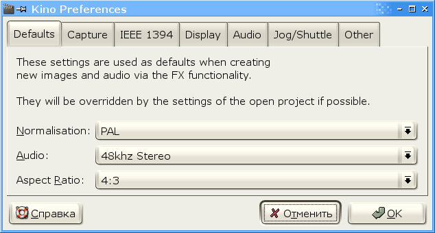
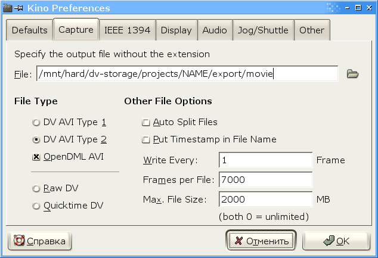
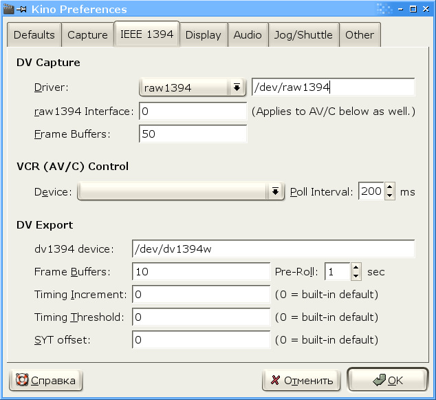
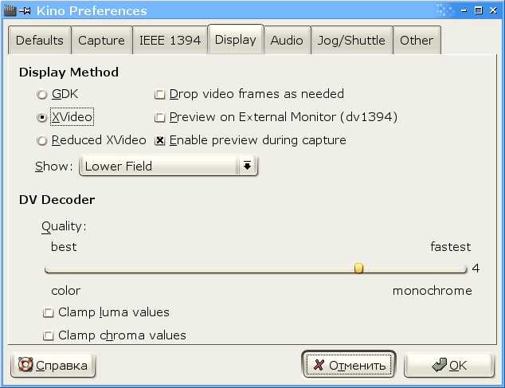
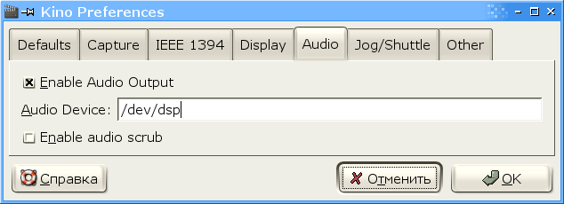
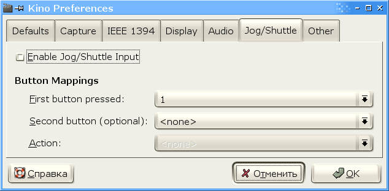
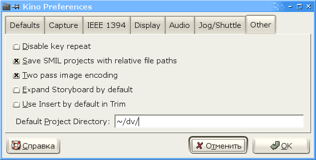
Я сделал перевод статьи Dan Dennedy, в которой он рассказывает о скрытых возможностях Kino. Рекомендую сначала ознакомиться с ней, а затем в файле ~/.gnome2/kino найти строчку:
и изменить её следующим образом:
Теперь требуется заново запустить Kino.
Теперь пришло время сбросить отснятый материал на компьютер. Для этого необходимо иметь не очень старый компьютер, оборудованный интерфейсом IEEE 1394 и имеющий вместительный жёсткий диск. Час DV материала занимает не больше 15 GB. Я использую для работы с видео достаточно древний компьютер: Intel Celeron 900 / 256 MB RAM / 140 GB HDD / PCI IEEE 1394 Interface / ALTLinux 2.4 Master
Для сброса материала используется программа Kino. Мне нравится работать с GUI, консоль оставим для других задач. Но если что-то вам мешает использовать графический интерфейс на данном этапе, то обратитесь к программе dvgrab.
Подключаем DV камеру к компьютеру. Я специально пропускаю момент настройки интерфейса IEEE 1394, это неоднократно и подробно описано в Google. К тому же на ALTLinux эта плата определяется автоматически. А вот список модулей следует привести:
Захват материала производят следующим образом. На вкладке "Capture" программы Kino указывается каталог и имя файла для размещения захваченного материала. Видеокамера включается в режиме "player" и запускается воспроизведение. В окне просмотра должно появиться изображение с камеры. Затем следует нажать на кнопку "Capture" и дождаться захвата материала. После захвата необходимо нажать на кнопку "Stop" и выключить видеокамеру.
По мере рассмотрения материала, мы достигнем структуры, показанной и прокомментированной ниже:
Приступаем к монтажу. Безжалостно режем всё ненужное, это около 50% материала, бывает больше. Как только процесс вычищения закончен и вы уверены, что больше никаких изменений в материал вноситься не будет, выполняем экспортирование материала в формате DV на тот же диск.
Это промежуточное экспортирование необходимо для сохранения дискового пространства. Мы оставляем только полезный материал. После экспортирования оригинальный материал можно удалить.
Создаём новый проект Kino. Импортируем в него материал, экспортированный на предыдущем шаге, и сохраняем проект под именем project.smil.
Теперь приступаем к набиванию комментариев к сценам. Одной сцене может быть присвоен только один комментарий. Если требуется несколько комментариев, просто разбейте одну сцену на нужное количество сцен и прокомментируйте каждую по отдельности. Если комментарий не будет вмещаться в одну строку, то при его внедрении в MPEG поток комментария будет разделён на две или более строк. Комментарий имеет формат:
Нормальная длительность комментария составляет 4 секунды, т.е. 100 кадров. На рисунке, приведённом ниже, показан пример готового проекта:
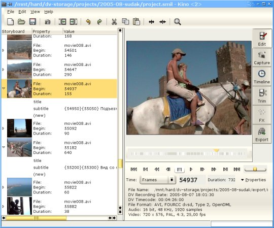
Не забываем периодически сохранять файл проекта, ведь именно в него производится сохранение информации о комментариях.
Сохраняем файл проекта и экспортируем из него комментарии с помощью команды:
Исходный код скрипта smil2sub.sh приведён ниже:
#!/bin/bash
while read line
do
echo $line | grep "subtitle=\"*\"" >/dev/null 2>&1 && \
echo $line | \
sed 's/.*<seq.*subtitle=\"\([^"]*\)\".*/\1/' | \
w3m -dump -T text/html
done
Первый поток субтитров будет содержать информацию о дате/времени съёмки. Для получения этой информации из материала необходимо установить программу dv2sub. Закройте Kino.
Перейдите в каталог с проектом и запустите Kino командой:
В результате этого во вкладке "Export" > "DV Pipe" появятся новые элементы выпадающего списка. Укажите любое имя файла в поле "File:", всё равно файл субтитров будет создан в каталоге запуска Kino, т.е. в каталоге проекта, и будет иметь имя dv2sub.sub.
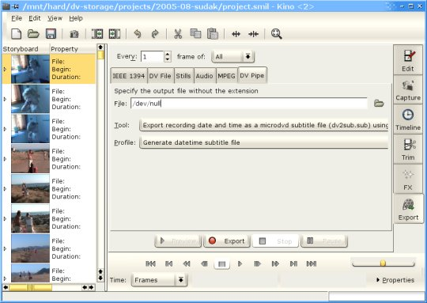
Переименовываем файл dv2sub.sub в timecode.sub.
Переходим на вкладку "Export" > "DV Pipe", указываем имя файла, компрессор (Tool: FFMPEG Dual Pass DVD-Video) и профайл (Standard VOB), как показано на рисунке. Затем нажимаем на кнопку "Export" и долго медитируем. Процесс кодирования MPEG файла (с расширением .vob) занимает достаточно много времени, по крайней мере, на моём компьютере.
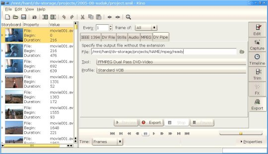
Импортирование субтитров производится с помощью утилиты spumux. Можно импортировать до 32-х независимых потоков с субтитрами. Я ограничиваюсь пока двумя.
В каталоге ~/.spumux/ должен быть файл arial.ttf.
Для импортирования комментариев используется управляющий файл subtitle.xml:
<subpictures>
<stream>
<textsub filename="subtitle.sub" characterset="KOI8-R"
fontsize="28.0" font="arial.ttf"
horizontal-alignment="left" vertical-alignment="bottom"
left-margin="60" right-margin="60" top-margin="20" bottom-margin="30"
subtitle-fps="25" movie-fps="25" movie-width="720" movie-height="574"
/>
</stream>
</subpictures>
Для импортирования информации о дате/времени используется управляющий файл timecode.xml:
<subpictures>
<stream>
<textsub filename="timecode.sub" characterset="KOI8-R"
fontsize="28.0" font="arial.ttf"
horizontal-alignment="left" vertical-alignment="bottom"
left-margin="60" right-margin="60" top-margin="20" bottom-margin="30"
subtitle-fps="25" movie-fps="25" movie-width="720" movie-height="574"
/>
</stream>
</subpictures>
Для упрощения импорта субтитров я использую следующий скрипт:
#!/bin/bash cat mpeg/ready.vob | spumux -s 1 -P timecode.xml | spumux -s 2 -P subtitle.xml > mpeg/dvd.mpeg
, который вызывается из главного каталога проекта.
На данный момент, создание меню для DVD - это нудная ручная работа. Но такой подход позволяет сделать то, чего невозможно добиться, используя программы - генераторы меню.
Меню представляет собой MPEG видео, в которое внедрён поток кнопок в виде субтитров. Кнопками являются особо определённые области на экране, при выделении или нажатии на которые происходит активизация одного из слоёв субтитров. Это обеспечивает подсветку соответствующей кнопки. При нажатии на кнопку может произойти выполнение команды, переход к другому меню или переход к видео. Все вопросы по созданию меню и использованию команд поможет снять команда:
Открываем GIMP и создаём новое изображение 720x576 (75x80 DPI) RGB. Вставляем в слой картинку для меню, пишем надписи, создаём кнопочки и так далее. Периодически сохраняем проект в формате XCF.
Слева и справа надо сделать направляющие, отступающие от краёв на 60 пикселей. Это граница для текстового оформления. Текст названия эпизодов набирается 24 шрифтом.
Обратите внимание на то, что картинки, текст и прочие элементы разделены по слоям. Это позволяет свободно перемещать объекты относительно друг друга:
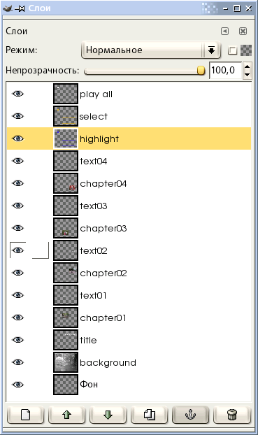
Когда работа с картинками завершена, надо добавить два слоя: Highlight (этот слой работает, когда кнопка меню выбирается пользователем) и Select (этот слой работает, когда кнопка меню была нажата пользователем).
Выбираем слой Highlight. Выбираем для него цвет переднего фона, например, #3516F1. Выбираем кисть, шаблон кисти - неразмытый кружок в 5 пикселей. Выбираем инструмент "Выделятор" и выделяем все кнопки, пользуясь клавишей Shift. Рисуем кромку с помощью "Правка" > "Обвести выделенное", в появившемся окне указываем, что надо "Использовать один из инструментов", а в качестве инструмента выбираем "Кисть". Получается слой с рамками для всех кнопок. То же самое выполняем для слоя Select, только цвет указываем #F1BB16. Сохраняем эти два слоя в отдельные картинки. Отдельно открываем эти файлики и преобразуем в 4-х цветное индексированное изображение. Сохраняем в формате PNG.
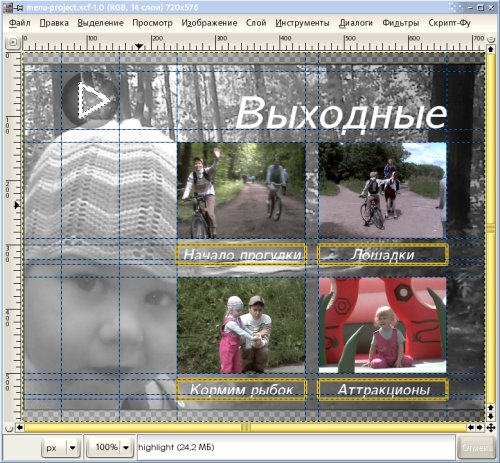
Создаём управляющий файл, который описывает параметры кнопок (имя и координаты), а также указывает на файлы, содержащие маски кнопок для разных режимов.
<subpictures>
<stream>
<spu start="00:00:00.0" end="00:00:00.0"
highlight="menu/button-hl.png"
select="menu/button-sl.png"
>
<button name="playall" x0="60" y0="30" x1="150" y1="120" />
<button name="button01" x0="240" y0="300" x1="440" y1="330" />
<button name="button02" x0="460" y0="300" x1="660" y1="330" />
<button name="button03" x0="240" y0="510" x1="440" y1="540" />
<button name="button04" x0="460" y0="510" x1="660" y1="540" />
</spu>
</stream>
</subpictures>
Приведённые ниже команды собирают DVD меню из подготовленных нами компонентов, в соответствии с описанным выше файлом menu.xml:
# Преобразовываем картинку в видео convert menus/background.png ppm:- | \ ppmtoy4m -n50 -F25:1 -A59:54 -I p -r | \ mpeg2enc -n p -f8 -b5000 -a2 -o background.m2v # Объединяем видео и аудио для меню mplex -f 8 -o menu-temp.mpeg background.m2v menu/silence.mp2 # Прописываем поток субтитров (кнопок) для меню spumux menu/menu.xml < menu-temp.mpeg > menu.mpeg
Для авторизации диска необходимо подготовить файл dvdauthor.xml следующего содержания:
<dvdauthor dest="DVD">
<vmgm />
<titleset>
<menus>
<video format="pal" aspect="4:3" />
<audio format="mp2" lang="RU" />
<pgc>
<button name="playall"> jump title 1 chapter 1; </button>
<button name="button01"> jump title 1 chapter 2; </button>
<button name="button02"> jump title 1 chapter 3; </button>
<button name="button03"> jump title 1 chapter 4; </button>
<button name="button04"> jump title 1 chapter 5; </button>
<vob file="final.mpg" pause="inf" />
</pgc>
</menus>
<titles>
<video format="pal" aspect="4:3" />
<audio format="ac3" lang="RU" />
<pgc>
<vob file="video.mpeg"
chapters="0,0:08,1:03,3:09,4:19"/>
<post> call menu; </post>
</pgc>
</titles>
</titleset>
</dvdauthor>
В данном примере у нас отсутствует главное меню. Мы используем сразу подменю, которое содержит пять управляющих зон-кнопок. Следует отметить, что наименования кнопок в данном файле совпадают с наименованиями кнопок, использованными при создании DVD меню (см. файл menu.xml).
Подразделы нашего диска определены параметром chapters тэга vob. Навигация производится именно по указанным подразделам (см. определение кнопок).
Авторизация диска выполняется с помощью команды:
Поправьте скрипты экспорта Kino, чтобы звук преобразовывался в AC3 формат в любом случае. Это позволит избежать проблем с фирменными DVD-плеерами. Китайские плееры играют всё что угодно и не могут рассматриваться как оборудование для тестирования созданного диска.
Субтитры намертво внедряются в MPEG файл. Если у вас в DVD проект входят несколько MPEG файлов, то о субтитрах вам точно не надо беспокоиться.
При указании следующего chapter в dvdauthor.xml округляйте значение секунд вперёд.
Заинтересованные в изменении содержимого данной статьи могут высылать свои мнения на radz at yandex dot ru